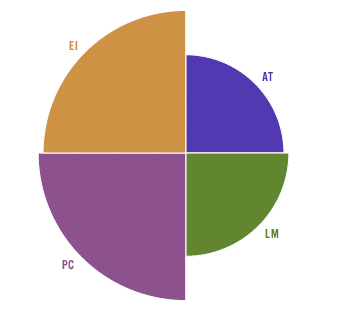
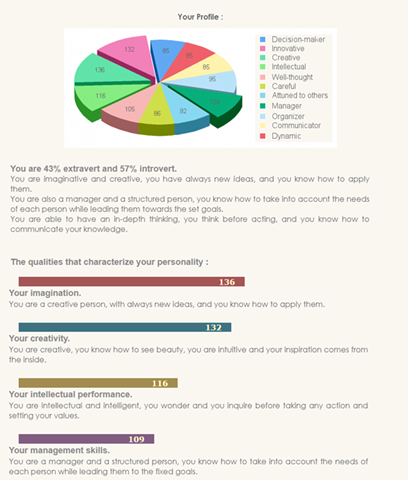
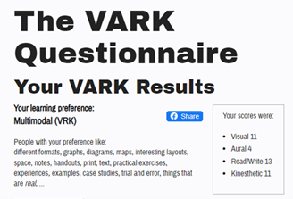

Team Profile
Ashton
Myers Briggs
Myers-Briggs test = Virtuoso. ISTP-T
Strengths
- Hands on learning.
- Optimistic and Energetic
- Spontaneous and rational
- Great in crisis
- Relaxed
Weaknesses
- Stubborn
- Insensitive
- Private and reserved
- Easily Bored
- Risky Behaviour
Team Composition
I'm an introverted person but when I have a task or goal, I must complete I do like to do it by myself. I think I will be okay in my group/team my characteristics show I have medium agreeableness which means I will be able to come to an agreeance with my peers.
Learning Test
Auditory: 30%, Visual: 30% Tactile: 40%.
I am a Tactile learner.
Big 5 personality test
My low characteristics are openness to experience, extraversion, and neuroticism. I had high characteristics of conscientiousness and medium characteristics of Agreeableness. I learn by having something in front of me I can touch and do myself.
Patrick
Myers Briggs
Strengths
- Curious
- Perceptive
- Enthusiastic
- Excellent Communicator
- Festive
- Good Natured
Weaknesses
- People-Pleasing
- Unfocused
- Disorganised
- Overly Accommodating
- Overly Optimistic
- Restless
Team Composition
ENFPs have excellent people skills. In addition to having an abundance of enthusiasm, they also genuinely care about others. ENFPs are good at understanding what other people are feeling. Given their zeal, charisma, and creativity, they can also make great leaders. I believe this will help me get the best out of people and in this case my team.
Education Planner – Learning Styles
- Auditory: 20%
- Visual: 35%
- Tactile: 45%
If you are a tactile learner, you learn by touching and doing. You understand and remember things through physical movement. You are a “hands-on” learner who prefers to touch, move, build, or draw what you learn, and you tend to learn better when some type of physical activity is involved. You need to be active and take frequent breaks, you often speak with your hands and with gestures, and you may have difficulty sitting still.
As a tactile learner, you like to take things apart and put things together, and you tend to find reasons to tinker or move around when you become bored. You may be very well coordinated and have good athletic ability. You can easily remember things that were done but may have difficulty remembering what you saw or heard in the process. You often communicate by touching, and you appreciate physically expressed forms of encouragement, such as a pat on the back.
The Big Five Personality Test
Agreeableness
Agreeableness describes a person’s tendency to put others’ needs ahead of their own, and to cooperate rather than compete with others. People who are high in Agreeableness experience a great deal of empathy and tend to get pleasure out of serving and taking care of others. They are usually trusting and forgiving.
Practical Caretaker
Helps other people in practical, everyday ways. Uses established institutions to maintain stability and security.
Sam
Myers Briggs Type Indicator INFJ-T Advocator
Strengths
- Creative
- Insightful
- Principled
- Passionate
- Altruistic
Weaknesses
- Sensitive to criticism
- Reluctant to open up
- Perfectionistic
- Avoiding the ordinary
- Prone to burnout
Team Composition
INFJT’s are comfortable creating innovative ideas, making decisions, and organising major projects. The Advocate is a negotiator in support of the team objectives who prefers to work in a structured environment and will take the initiative to plan. When forming a team, I am aware of my strengths and am comfortable discussing roles upfront to provide clarity within the team. I am not a leader as I prefer to observe but can act as a support to the leader as needed.
Test Colour
The results of this personality test are consistent with the Myers Briggs test. Strong qualities in Creativity, Intellect and Management. Management skills relating to structure, planning and decisions as well as supporting others. Intellect in relation to taking considered and thoughtful actions. Creative and imaginative in finding inspiration and generating ideas.
VARK – Learning preference
Results shows preference in a wide range of learning materials but clearly favouring reading and writing. Visual aids such as diagrams or video as well as Kinesthetics such as doing things to learn is a close second preference.
Summary
It helps the team members to understand differences in characteristics and patterns of thinking in order to find ways to work with each other. Working towards each other's strengths in the team by assigning tasks or roles they would be good at is also positive way to approach things. Finding solutions and being mindful of negative aspects can also give perspective in the group when you are still getting to know each other.
Ven
Myers Briggs
My Personality Type is an Adventurer ISFP-T.
Strengths
The strength of the Adventurer is charming, sensitive to others, imaginative, passionate, curious, and artistic. They are relaxed and warm with a “live and let live” attitude that naturally makes them likeable and popular. The Adventurer can easily relate to others’ emotions which helps them establish harmony and good will and minimizes conflict.
Weaknesses
The Adventurer’s weaknesses are that they are fiercely independent, unpredictable, easily stressed, overly competitive, and fluctuating self-esteem. Anything that interferes with their freedom of expression creates a sense of oppression, that makes work a challenge.
Team Composition
The team composition for the Adventurer is where they have as much wiggle room as possible to do things the way that they like; and be spontaneous, charming, and genuinely fun people to be around. They just want the chance to express those natural qualities and to know that their efforts are appreciated.
Learning Style Test
Academic Drive
I am driven by academic success and likely to excel due to my commitment, effort, and determination.
Personal Value
I enjoy studying and see value in what I am studying. I am motivated to complete my studies and enjoy activities that are new and challenging.
Goal Alignment
The online degree is directly connected to my career and life goals, and I am confident that this course will get me to where I want to go.
Time Management
Time management is one of my strengths and am more likely to achieve success in my studies. The test highlighted that I am a superstar in time management, and well versed in prioritising.
Accessing Support
Students who make use of the relevant study resources and support systems are more likely to persist with their studies and achieve success. According to the test, I am well versed in independent learning.
Using Technology
Students who are comfortable in using digital platforms can quickly adapt to online studies. In my current work and personal life, I am considered a professional in using digital platforms, and strongly believe that online learning tools are significant in developing effective, self-directed learning skills.
Persistence
Students who can remain focused and motivated throughout their studies are more likely to meet their long-term goals. I have a strong aptitude for staying focused and determined to work towards my goals and is invaluable while studying and managing competing priorities.
Big 5 Test
In the Big 5 Test, my scores were high in Altruism, Cooperation, Modesty, Sympathy and Self-Efficacy.
Altruism
Altruistic people find helping other people genuinely rewarding. Consequently, they are generally willing to assist those who are in need. Altruistic people find that doing things for others is a form of self-fulfilment rather than self-sacrifice.
Cooperation
Individuals who score high on this scale dislike confrontations. They are perfectly willing to compromise or to deny their own needs in order to get along with others.
Modesty
High scorers on this scale do not like to claim that they are better than other people. In some cases, this attitude may derive from low self-confidence or self-esteem.
Sympathy
People who score high on this scale are tender-hearted and compassionate. They feel the pain of others vicariously and are easily moved to pity.
Self-Efficacy
Self-Efficacy describes confidence in one's ability to accomplish things. High scorers believe they have the intelligence (common sense), drive, and self-control necessary for achieving success.
Summary
The results of the tests give me an insight into my personality and how this impacts the way I work. I have done tests like this before, and the results between have changed somewhat. This I believe is due to the fact, that as people, we change and grow over time. Life experiences can also affect how we feel and answer questions, and the time of day may also impact our answers. I will need to keep in mind that I am part of a group and need to be able to contribute to the group rather than go on tangents doing my own thing. I will also need to ensure that I speak up with ideas and ensure that I do not take comments as criticisms. As part of a team, I need to consider how I interact with people, and how they interact with others. I believe the current team have compatible personalities, and to date we are working effectively together.